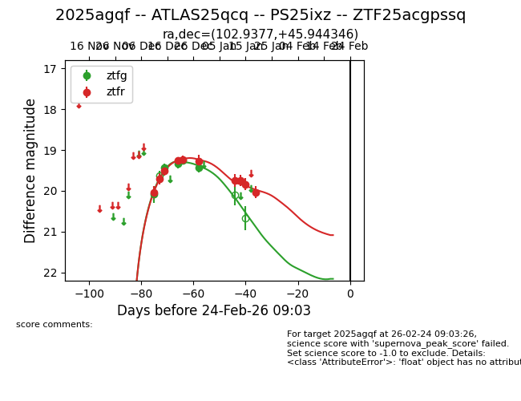
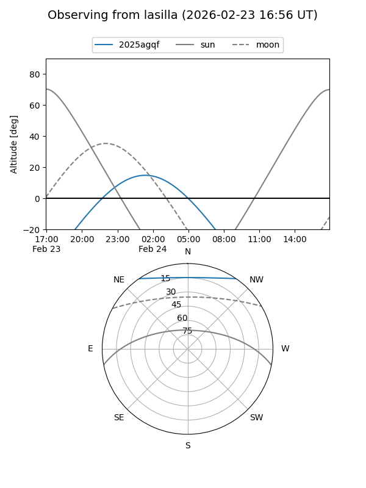
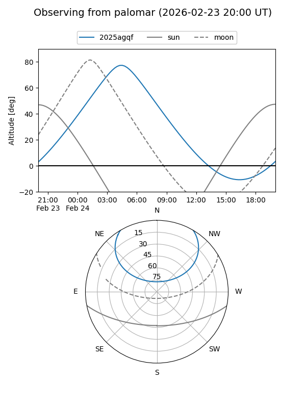
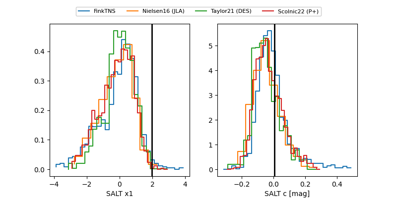

2025agqf
Target 2025agqf at 2025-12-22 14:03
Aliases and brokers:
FINK: fink-portal.org/ZTF25acgpssq
Lasair: lasair-ztf.lsst.ac.uk/objects/ZTF25acgpssq
ALeRCE: alerce.online/object/ZTF25acgpssq
TNS: wis-tns.org/object/2025agqf
YSE: ziggy.ucolick.org/yse/transient_detail/2025agqf
alt names
ZTF25acgpssq (ztf,fink_ztf)
2025agqf (tns,yse)
Coordinates:
equatorial (ra, dec) = 102.9376,+45.94437
equatorial (HMS+DMS) = 06:51:45.03,+45:56:39.74
galactic (l, b) = (170.3427,+19.18040)
Flags:
Photometry:
last ztfg=19.25, ztfr=19.23
4 ztfg, 5 ztfr detections
Lightcurve

Visibility


Additional plots
